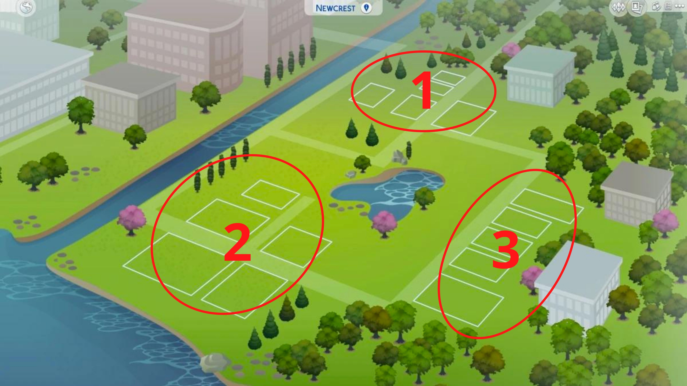
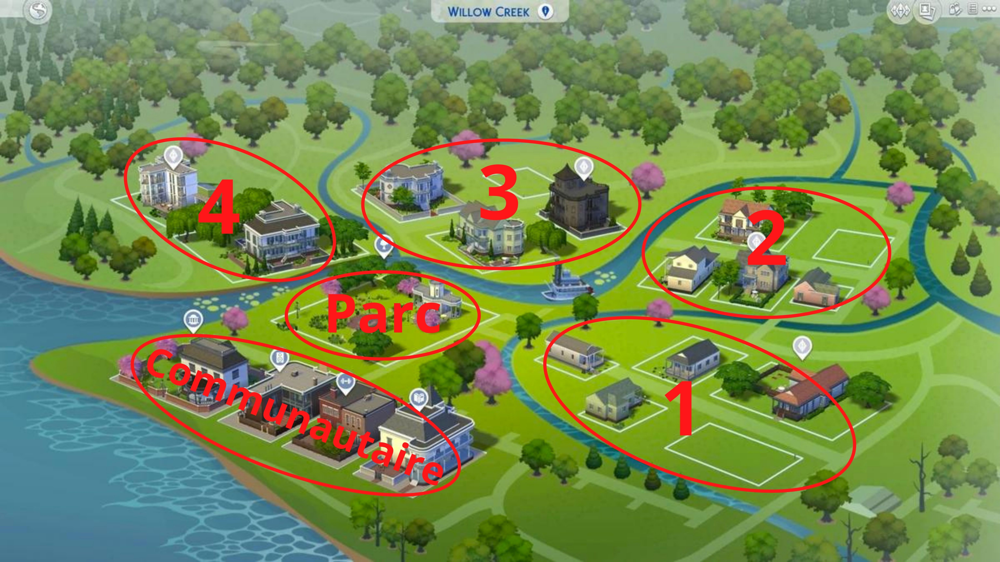
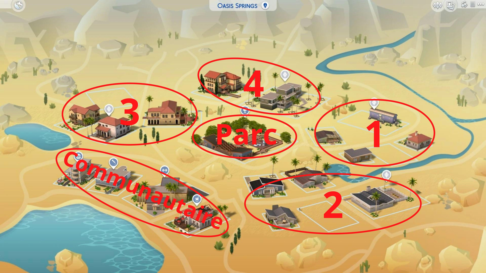
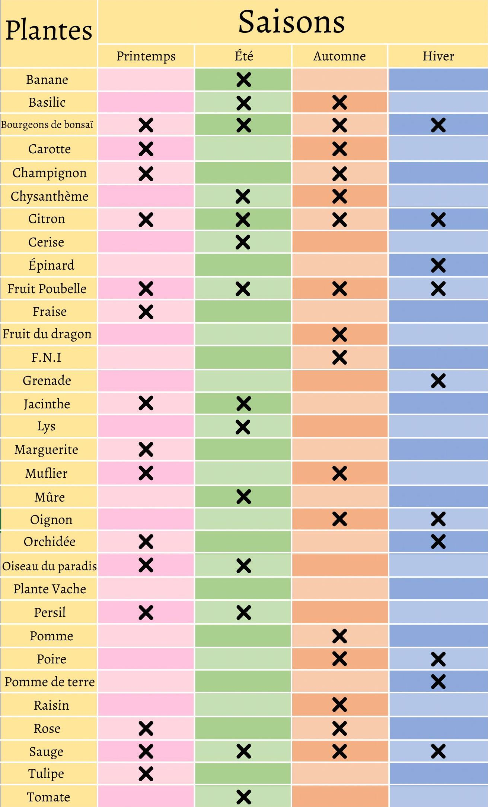
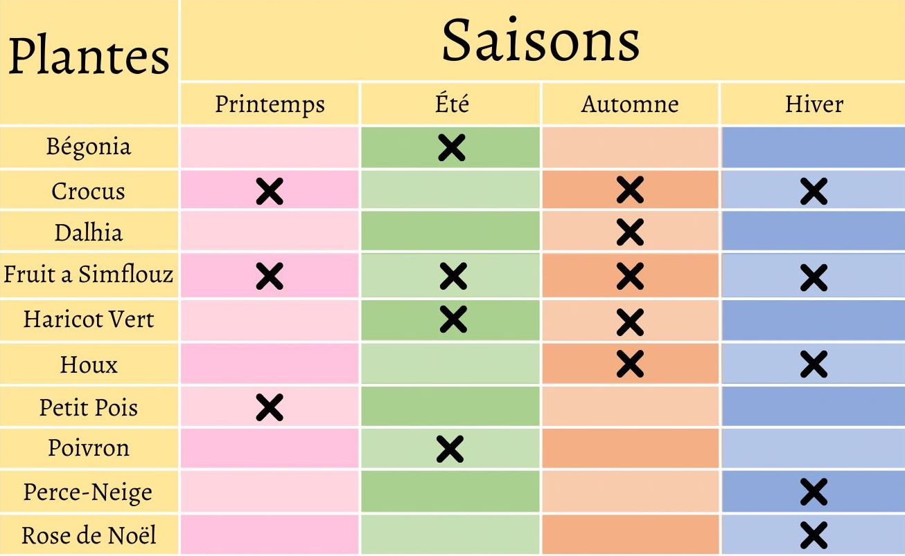

NewCrest

Quartier 1
- Fruit: Fraises
- Légumes: Champignons, Oignons
- Fleurs: Mufliers
Quartier 2
- Fruit: Fraises, Pommes
- Légumes: Champignons
- Herbes Aromatiques: Basilic
- Fleurs: Jacinthes, Lys, Mufliers
Quartier 3
- Fruit: Fraises, Pommes
- Légumes: Pommes de terre, Oignons
- Fleurs: Jacinthes, Lys, Mufliers
willow Creek

Parc Magnola Blossom
- Fruit: Fraises, Pommes, Poires
- Fleurs: Lys, Mufliers
Le Quartier des Lieux Communautaires
- Fruit: Fraises, Pommes, Poires
- Légumes: Oignons, Pommes de terre
- Fleurs: Lys, Mufliers, Roses
Quartier 1
- Fruit: Pommes
- Légumes: Champignons
- Fleurs: Chrysanthèmes, Lys, Mufliers
Quartier 2
- Fruit: Fraises
- Légumes: Champignons, Oignons
- Fleurs: Mufliers, Roses
Quartier 3
- Fruit: Fraises, Pommes, Poires
- Légumes: Champignons
- Fleurs: Jacinthes, Lys, Mufliers, Roses
Quartier 4
- Fruit: Fraises, Pommes, Poires
- Légumes: Oignons
- Herbes Aromatiques: Basilic
- Fleurs: Lys, Mufliers
Oasis Springs

Parc Desert Bloom
- Fruit: Citrons, Mûres
- Légumes: Carottes
- Herbes Aromatiques: Sauge
- Fleurs: Chrysanthèmes, Marguerites
Le Quartier des Lieux Communautaires
- Fruit: Citrons
- Légumes: Carottes
- Fleurs: Chrysanthèmes, Marguerites
Quartier 1
- Fruit: Citrons, Fraises
- Légumes: Carottes, Oignons, Tomates
- Herbes Aromatiques: Sauge
- Fleurs: Chrysanthèmes, Marguerites
Quartier 2
- Fruit: Cerises, Fraises
- Légumes: Carottes, Oignons
- Herbes Aromatiques: Sauge
- Fleurs: Chrysanthèmes
Quartier 3
- Fruit: Citrons, Cerises, Mûres
- Légumes: Oignons
- Fleurs: Tulipes
Quartier 4
- Fruit: Cerises, Citrons
- Légumes: Carottes
- Herbes Aromatiques: Sauge
- Fleurs: Marguerites, Tulipes
Plante vache: Il lui faut un grand espace extérieur de préférence.
Quand elle est encore jeune il faut s'occuper d'elle comme une plante classique
(L'arroser et la désherber si besoin). Une fois adulte il faut la nourrir avec de
la viande toute les 12 h, Si elle n'est pas nourrie elle mangera les passants (si elle
un Sims elle peut être trait pour récolter une essence de vie qui rajeunit votre miss;
mais si elle recrache la miss on peut obtenir une essence d'hébétement) la plante meurt si
elle n'est pas nourrie au bout de 24 h.

